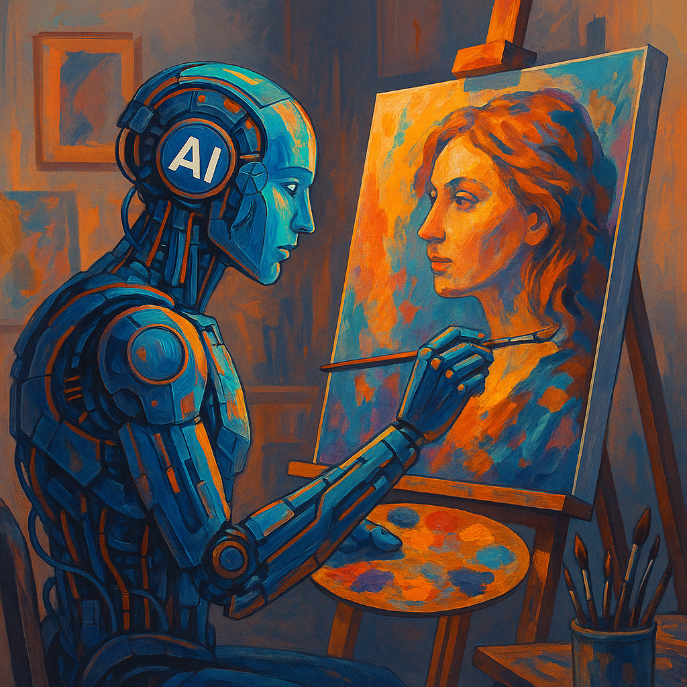
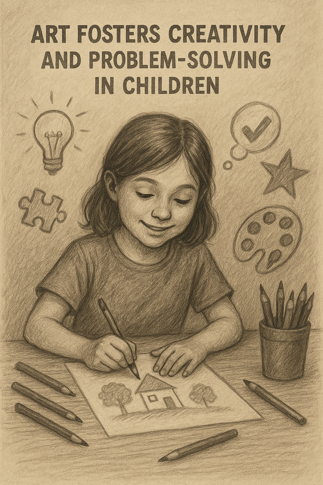

27 July, 2025
How AI is Influencing Art and Design Vocations
AI is transforming art and design, streamlining workflows with tools like DALL-E and Figma...
Read More

18 June, 2024
Why Art Matters: Unlocking Creativity in Children
Art fosters creativity and problem-solving in children, building skills for future innovators...
Read More
12 September, 2023
Art as Therapy: Boosting Mental Health Through Creativity
Creating art reduces stress and fosters emotional well-being, from sketching to UI/UX design...
Read More
23 March, 2023
Healing Through Art: A Path to Wellness
Art therapy aids physical and emotional recovery, offering mindfulness through creativity...
Read More
02 February, 2022
Design Systems: The Backbone of Seamless UI/UX
Design systems ensure consistency and efficiency in UI/UX, critical for tools like AmTrust’s...
Read More
12 January, 2025
User-Centric Design: Empowering Small Businesses
User-centric websites drive success for small businesses with intuitive designs...
Read More